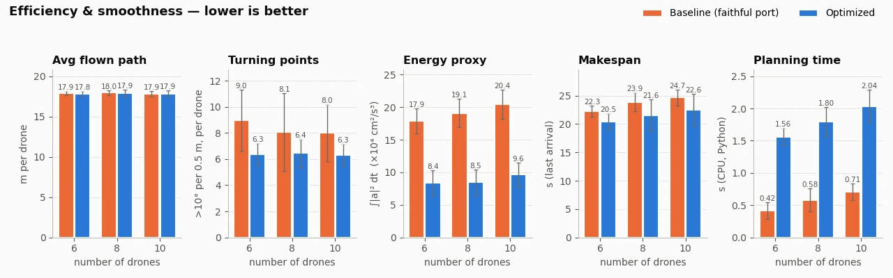

无人机集群路径规划
2025 年实习时，我在 UE5 里写了一套多无人机协同规划器。2026 年我把它逐函数移植成独立仿真，复盘原版在交叉飞行时为什么会撞，再重做规划、平滑和执行三层，让 10 架无人机互换位置时机间碰撞降到 0。
- 问题
- 6–10 架无人机在有建筑和移动障碍的三维空间里同时飞向各自目标，互不相撞
- 我做的
- 原版：UE5 C++ 集群管理、A* 规划、预约表、平滑和雷达扫描。重做：移植仿真、复盘、CBS 规划与执行层
- 技术栈
- UE5 C++ · 时空 A* · CBS / ECBS · 动作依赖图 · 速度障碍法 · Python
- 评估
- 6 / 8 / 10 架，每档 30 张随机城市地图，起终点交叉，强制产生冲突
- 结果
- 10 架时，至少碰撞一次的飞行从 93% 降到 0；拐点减少约 21%，加速度能量代理降一半，完成时间缩短 8%。
- 代价
- 规划耗时约为原版 3 倍（Python 下 10 架约 2 秒）；移动障碍突然掉头时仍偶有碰撞。
原版做了什么
原工程是 UE5 的 C++ 组件：三维栅格地图、每架无人机一个 A* 规划器、全局预约表记录别的无人机何时在哪，规划时避开预约冲突；规划出的折线经过迭代平滑，飞行中用多线雷达扫描移动障碍，必要时重规划。
UE5 工程依赖 Windows 和完整的场景资产，没法在现在的机器上直接跑。所以我把 Source/Drone/ 下的规划、预约、平滑、扫描逻辑逐函数移植到 Python，场景换成随机生成的体素城市，作为基线。
- 规划A* + 预约表
- 平滑迭代平滑 + 净空检查
- 执行雷达扫描、近距离急停、重规划
回头看：为什么会撞
让 10 架无人机互换位置，原版几乎每张地图都会撞。逐行对照代码，问题出在几处设计上：
- A* 没有时间维。搜索状态只有空间格子，也没有“原地等待”这个动作，预约表只能剪掉邻居，不能让一架机停下来让路。冲突检测只比较点，不检查两架机沿线段对穿。
- 时间轴对不上。所有无人机 t = 0 同时起飞；规划器按 100 cm/s 算预约时间，实际飞行速度不同；中途重规划时时间又从 0 开始。
- 平滑太脆。只要有一个点不安全，整条路径就退回原始折线；膨胀半径接近 0 且允许对角穿角，会贴着楼角飞。
- 急停规则会连锁。“110 cm 内停 0.5 秒”的规则对已经到达终点的无人机也生效，附近的无人机被反复急停，打乱原定的先后顺序。
这些问题在少量无人机、路线不交叉时不明显；场景一拥挤，就全部暴露出来。
规划：CBS 与真正的时空 A*
底层换成真正的时空 A*：状态是“格子 × 时间”，可以原地等待，禁止对角穿角。两架机在同一时刻不能处于相邻格（间距至少 100 cm），跨时刻的跟随和对穿也算冲突。
上层用 CBS（基于冲突的搜索）协调：先各自规划，找到第一处冲突，就分别给两架机加约束重新规划，直到无冲突。普通 CBS 在 10 架时 20 秒都解不出来；加上邻域约束、ECBS 式的次优焦点搜索和冲突回避表后，90 个场景全部在 1–2 秒内解出。
平滑与执行
管道平滑。每个航点最多偏离格心 0.35 格，同时保持与建筑的净空。不安全的点只在管道内局部调整，不会整条退回折线。
动作依赖图（ADG）。取代近距离急停规则。无人机按计划中的先后顺序通过冲突区域：轮到自己才进，否则等前一架过去。这样即使某架机因为躲障碍慢了，也不会打乱机间顺序。
速度障碍法避让移动障碍。雷达配置与基线相同（16 线、10 Hz）。障碍在盲区或视野外时按恒速预测，不确定半径随时间扩大；候选动作沿路径往前推演 3.5 秒，再过一层安全过滤。消融实验里关掉这一层，10 架时 87% 的飞行会撞上移动障碍。
结果
- 6 架 · 原版
- 57%
- 8 架 · 原版
- 77%
- 10 架 · 原版
- 93%
- 6 / 8 / 10 架 · 优化版
- 0%
最小机间距离从 15–32 cm 提到 80–93 cm，建筑擦碰从每次飞行 3.6–5.1 次降到 0。全部到达且零碰撞的任务成功率，原版在 6 架时只有 3%，优化版为 100% / 90% / 97%（6 / 8 / 10 架），失败的几次都是撞上了突然掉头的移动障碍。



局限
- 不是 UE5 物理。这是 20 Hz 的质点运动学仿真，没有空气动力学和真实飞控。
- 感知理想化。雷达射线命中即得到障碍中心，真实雷达还需要点云聚类和跟踪。
- 安全保证有边界。动作依赖图只对沿规划路径飞行的无人机严格无碰撞；躲避移动障碍时的横向偏移靠采样和安全过滤，属于经验上的安全。
- 参数没有留出测试集。避障参数是在同一批场景上调的，下一步换一批新地图再验证一次。